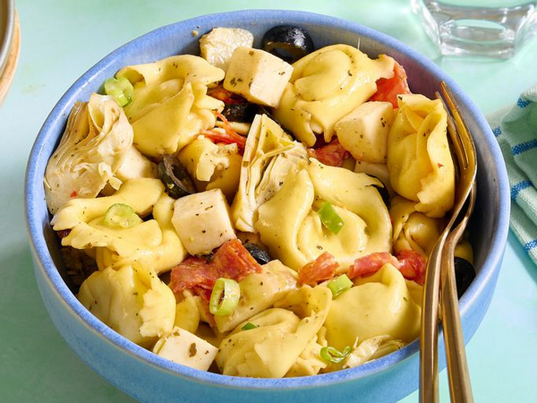

Home
Tortellini Salad Recipe

Description
Make a delicious tortellini salad with artichoke hearts, cheese, pepperoni, olives, and cheese! This recipe provides 8 servings and follows an easy 5-step process.
Ingredients
Tortellini Salad:
- 1 (16 ounce) package refrigerated cheese tortellini
- 1 (6.5 ounce) jar marinated artichoke hearts, drained and chopped
- 6 ounces mozzarella cheese, diced
- 4 ounces sliced pepperoni, quartered
- 1 (2.25 ounce) can sliced black olives
- 2 green onions, sliced
Dressing:
- ⅓ cup extra-virgin olive oil
- 1 ½ tablespoons balsamic vinegar
- 1 ½ tablespoons distilled white vinegar
- 1 teaspoon dried Italian herb seasoning
- salt and black pepper to taste
Steps
- Gather all ingredients.
- Start the salad: Fill a large pot with lightly salted water and bring to a rolling boil; stir in tortellini and return to a boil. Cook uncovered, stirring occasionally, until the tortellini float to the top and the filling is hot, about 3 minutes.
- While the tortellini is cooking, make the dressing: Whisk oil, both vinegars, Italian seasoning, salt, and pepper together in a bowl.
- Finish the salad: Drain tortellini, then rinse with cold water and drain again. Transfer to a large bowl and add artichoke hearts, mozzarella, pepperoni, olives, and green onions.
- Pour dressing over top and toss until well combined. Cover and refrigerate for at least 1 hour before serving.